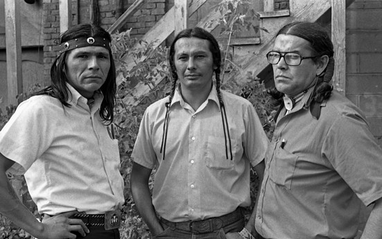

The Trail of Broken Treaties, Recognition and Blowback
A consistent tactic of AIM organizers has been to draw attention to the federal government's long history of broken promises to Indigenous Americans. In 1972, AIM organized its most ambitious action to date, the Trail of Broken Treaties. Hundreds of Native Americans drove in caravans, beginning on the West Coast, to the offices of the Department of the Interior in Washington, D.C. During the occupation, AIM released the Twenty Points, a list of demands that included the re-recognition of Native tribes, abolition of the Bureau of Indian Affairs (an organ of the Department of the Interior) and federal protections for Indigenous cultures and religions. The occupiers held the BIA office for a week, building a tipi on its lawn.
President Richard Nixon dismissed the Twenty Points but took the protest seriously, endorsing self-determination for Indian tribes. With his support, Congress passed the Indian Self-Determination and Education Assistance Act of 1975, which reversed the termination policy and provided recognition and funds to Indian tribes.
Between the Trail of Broken Treaties and the passage of the Self-Determination Act, however, violent conflict erupted between Native American activists and federal authorities. In 1973, an Indian man named Wesley Bad Heart Bull was stabbed to death by a white man in Custer, South Dakota. AIM activists and others rallied to the area to demand justice, but were not satisfied with the local authorities response. The confrontation escalated into a riot in Custer followed by an armed Indian occupation of the Pine Ridge Reservation, the site of the 1890 Wounded Knee Massacre.
View of several members of the American Indian Movement (AIM) as they stand next to a sweat lodge erected on a hill below the Sacred Heart Church during the occupation of the town of Wounded Knee on the Pine Ridge Reservation, South Dakota, 1973. AIM occupied the town, exchanging gunfire with local and federal troops, from February 27 through May 8, 1973, following internal reservation disputes as well as disatisfaction with the US government's treatment of Native American peoples in general. (Photo by Peter Davis/Getty Images)
Getty Images
Several AIM members stand next to a sweat lodge erected on a hill below the Sacred Heart Church during the occupation of Wounded Knee on the Pine Ridge Reservation, South Dakota, 1973.
For 71 days, as federal marshals and the FBI cordoned off the area and refused to allow the press inside. In sporadic exchanges of gunfire, two Indian activists were killed and another 14 wounded, with two FBI agents killed and two wounded. Ray Robinson, an African American civil rights activist, disappeared while occupying Wounded Knee, and is believed to have been murdered. Banks was arrested, along with prominent AIM member Russell Means, although the charges against them were later thrown out.
The Washington protests and the violence at Pine Ridge drew attention to AIM's cause. Later that year, actor Marlon Brando sent Sacheen Littlefeather, a woman who had participated in the occupation of Alcatraz and who claimed Native American ancestry, to accept the Academy Award for Best Actor on his behalf. In 1974, AIM called for a gathering of Indigenous people from across the Western Hemisphere on the land of the Standing Rock Sioux in South Dakota. More than 5,000 representatives from 98 Indigenous nations attended, forming the International Indian Treaty Council. Later that year, the IITC received official recognition from the UN, the first Indigenous organization to do so.
In 1975, the Department of Housing and Urban Development designated AIM as the primary sponsor of Little Earth of United Tribes, the first Indigenous housing project in the country, in Minneapolis. In 1978, AIM organized a second march from the West Coast to Washington, titled the "Longest Walk." President Jimmy Carter refused to meet with the protestors, but the action received support from Sen. Robert Kennedy and cultural figures like Brando and boxer Muhammad Ali. Their arrival coincided with the passage of the American Indian Religious Freedom Act, which granted Native Americans the right to use certain lands and controlled substances for religious ceremonies.

Fighting for Culture and International Indigenous Rights
The late 1970s and '80s were marked by infighting within AIM, as the revelation that the organization's head of security was an FBI informant sowed seeds of distrust. In recent decades, AIM has been known primarily for cultural advocacy and for its work on behalf of Indigenous rights on a global scale.
In 1991, Clyde Bellecourt and others revived the Sundance, a traditional gathering of celebration and thanksgiving, at Pipestone National Monument. The ceremony has been held every year since. Clyde's brother Vernon became active in the fight to rename American sports teams, convincing the NCAA to bar the use of Indian mascots during its tournaments in 2005. None of Bellecourts “big four” targets had changed their names before his death in 2007, but two of them—now known as the Cleveland Guardians and the Washington Commanders—eventually relented.
In 2007, the UN adopted the Declaration on the Rights of Indigenous Peoples, enshrining the rights of Indigenous peoples to cultural and ceremonial expression, identity, language, employment, health and education into international law by a vote of 144 to 4 (the United States and Canada both voted “no”). The declaration was a watershed moment for the international Indigenous community which AIM had helped unite.
Despite these victories, AIM itself split in 1993, with one successor organization based in Minneapolis and another based in Denver. In 2008, the Heart of the Earth Survival School closed as its Executive Director was investigated for fraud, but over its 36-year history, the school graduated more Native students than the rest of the Minneapolis public school system put together.
Often overshadowed by other, larger movements and by the infighting that led to its rupture, AIM was nevertheless an active and highly effective element of the broader push for civil rights in the 1960s and '70s. Its early radical actions and repeated occupations of government buildings succeeded in extracting concessions, including the passage of laws that dramatically altered federal policy toward Native Americans.
